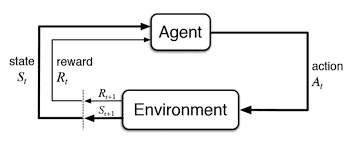

Reinforcement Learning 1
Introduction
RL Applications
- Robotics & Autonomous Driving
- Game AI
- Finance & Training
- Recommendation System
- Optimization System
ML Algorithms
State(\(S_t\)), Action(\(A_t\)), Environment, Reward(\(R_{t+1}\))

Markov Decision Process
Grid World
- Deterministic grid world
vsStochastic grid world
Markov Property
Stochastic Process
- Discrete-time random process: \(S_0, S_1, \cdots, S_t, \cdots\)
- Continuous-time random process: \(\{S_t|t\ge0\}\)
- Markov Property: \(P(S_{t+1}=s'|S_t=s)=P(S_{t+1}=s'|S_0=s_0,S_1=s_1,\cdots,S_t=s_t)\)
- \(S_{t+1}=s'\) does not depend on past states.
Markov Process \((S,P)\) - \(S\): A finite set of states. - \(P\): A state transition probability matrix \([P_{ij}]\), \(P_{ij}=P(s_j|s_i) = P(S_{t+1}=s_j|S_t=s_i)\) - Sum of row = 1
Markov Decision Process
- MDP: \((S, A, P, R, \gamma)\)
- \(S\): State space
- \(A\): Action space
- \(P\): State transition probability, \(P^{a}_{ss'} = p(s'|s,a) = P(S_{t+1}=s'|S_t=s,A_t=a)\)
- \(R\): Reward function \(R_{ss'}^a,R_s,R^a_s\)
- \(\gamma\in[0,1]\): Discount factor
- Model-based: known MDP
- Model-free: unknown MDP
MDP \(\rightarrow\) \(S\) and \(A\) continuous OK.
Reward & Policy
Reward
- Reward \(R_t\): scalar feedback
- Agent’s goal: maximize the cumulative sum of rewards
All goals can be described by the maximization of the expected value of the cumulative sum of rewards. - Reward Hypothesis
- State Transition Probability
- \(P_{ss'}^a = p(s'|s,a) = P(S_{t+1}=s'|S_t=s,A_t=a) = \sum\limits_{r\in R}p(s',r|s,a)\)
- Expected Reward for State-Action Pair
- \(R_s^a = r(s,a) = E[R_{t+1}|S_t=s,A_t=a] = \sum\limits_{r\in R}r\sum\limits_{s'\in S}p(r|s,a)\)
- Expected Reward for State-Action-Next State Triple
- \(R_{ss'}^a = r(s,a,s') = E[R_{t+1}|S_t=s,A_t=a,S_{t+1}=s'] = \frac{\sum\limits_{r\in R}rp(r|s,a,s')}{p(s'|s,a)}\)
Return
- Return \(G_t\): total discounted reward
- \(G_t = R_{t+1} + \gamma R_{t+2} + \gamma^2 R_{t+3} + \cdots = \sum\limits_{k=0}^{\infty}\gamma^k R_{t+k+1}\)
MDP가 discount하는 이유 - Mathematically convenient, Accounts for uncertainty
Policy
- A stochastic policy \(\pi(a|s) = P(A_t=a|S_t=s)\)
- A deterministic policy \(\pi(s) = a\)
- Under a known MDP, \(\pi_*(s)\) exists.
- Under an unknown MDP, an \(\epsilon\)-greedy policy is needed
- \(1-\epsilon\): Choose the optimal value
- \(\epsilon\): Choose randomly
Summary of Notations
- \(\pi\): Policy
- \(\pi(a|s)\): Stochastic policy
- \(\pi(s)\): Deterministic policy
- \(v_{\pi}(s)\): State-value function
- \(v_*(s)\): Optimal state-value function
- \(q_{\pi}(s,a)\): Action-value function
- \(q_*(s,a)\): Optimal action-value function
Bellman Equation
Bellman Equation
Value Functions
Goodness of each state \(s\)(or \((s,a)\)) when following policy \(\pi\), in terms fo the expectation of \(G_t\).
- State-Value function
- \(v_\pi(s) = E_\pi[G_t|S_t=s] = \sum\limits_a \pi(a|s)q(s,a)\)
- Action-Value function
- \(q_\pi(s,a) = E_\pi[G_t|S_t=s,A_t=a]\)
- \(A_\pi(s,a) = q_\pi(s,a) - v_\pi(s)\)
Bellman Equation
\[ \begin{aligned} v_\pi(s) &= E_\pi[G_t|S_t=s] \\ &= \sum\limits_a E_\pi[G_t|S_t=s, A_t=a] \cdot P(A_t=a|S_t=s) \\ &= \sum\limits_a \pi(a|s) E_\pi[R_{t+1} + \gamma G_{t+1}|S_t=s, A_t=a] \\ &= \sum\limits_a \pi(a|s) E_\pi[R_{t+1} + \gamma G_{t+1}|S_t=s, A_t=a, R{t+1}=r, S_{t+1}=s'] \\ &\qquad\qquad\qquad\cdot P(S_{t+1}=s', R_{t+1} = r|S_t=s, A_t=a) \\ &= \sum\limits_a \pi(a|s) \sum\limits_{s',r} p(s',r|s,a) \left[r + \gamma E_\pi[G_{t+1}|S_{t+1}=s']\right] \\ &= \sum\limits_a \pi(a|s) \sum\limits_{s',r}\left[rp(s',r|s,a) + \gamma E_\pi[G_{t+1}|S_{t+1}=s']\cdot p(s',r|s,a)\right] \\ &= \sum\limits_a \pi(a|s) \left[ R^a_s + \gamma\sum\limits_{s',r}p(s',r|s,a)v\pi(s') \right] \\ &= \sum\limits_a \pi(a|s) \left[r+\gamma\sum\limits_{s'}P^a_{ss'}v_\pi(s')\right] \\ &= \sum\limits_a \pi(a|s) E[R_{t+1} + \gamma v_\pi(S_{t+1})|S_t=s,A_t=a] \\ &= E[R_{t+1} + \gamma v_\pi(S_{t+1})|S_t=s] \end{aligned} \]
\[ \begin{aligned} q_\pi(s,a) &= E_\pi[G_t|S_t=s, A_t=a] \\ &= \sum\limits_{s',r} p(s',r|s,a) \left[r + \gamma E_\pi [G_{t+1} | S_{t+1}=s']\right] \\ &= \sum\limits_{s',r} p(s',r|s,a) \left[r+\gamma\sum_{a'}\pi(a'|s')q(s',a')\right] \\ &= E_\pi\left[R_{t+1} + \gamma v_\pi(S_{t+1})|S_t=s,A_t=a\right] \\ &= E\left[R_{t+1} + \gamma E_\pi\left[q_\pi(S_{t+1}, A_{t+1})|S_{t+1}=s'\right]|S_t=s, A_t=a\right] \\ &= E\left[R_{t+1} + \gamma q_\pi(S_{t+1}, A_{t+1})|S_t=s, A_t=a\right] \end{aligned} \]
Optimal Policy
Optimal Value Functions and Policy
- Optimal state-value function: \(v_*(s) = \max\limits_\pi v_\pi(s)\)
- Optimal action-value function: \(q_*(s,a) = \max\limits_\pi q_\pi(s,a)\)
If \(\pi' \ge \pi\), \(v_{\pi'}(s) \ge v_\pi(s)\) for all \(s\)
Optimal policy \(\pi_* \ge \pi\) for all \(\pi\)
\(v_{\pi_*}(s) = v_*(s)\), \(q_{\pi_*}(s,a) = q_*(s,a)\)
Finding an Optimal Policy
\[ \pi_*(s) = \begin{cases} 1 & \text{if } a = \arg\max\limits_a q_*(s,a) \\ 0 & \text{otherwise} \end{cases} \]
- \(v_*(s) = \max\limits_a q_*(s,a)\quad \because v_\pi(s) = \sum\limits_a\pi(a|s)q_\pi(s,a)\)
- \(q_*(s,a) = r(s,a) + \gamma\sum\limits_{s'}p(s'|s,a)v_*(s')=R_s^a + \gamma\sum\limits_{s'}P^a_{ss'}v_*(s')\)
- \(v_*(s)\) can be obtained directly from \(q_*(s,a)\)
- \(q_*(s,a)\) cannot be obtained directly from \(v_*(s)\)
- Instead, we need to know the transition probability \(p(s'|s,a)\)$ under model-based settings.